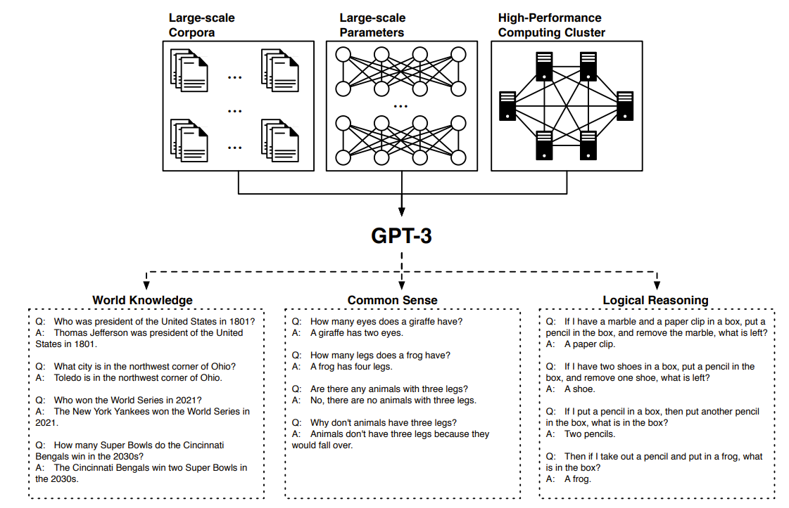
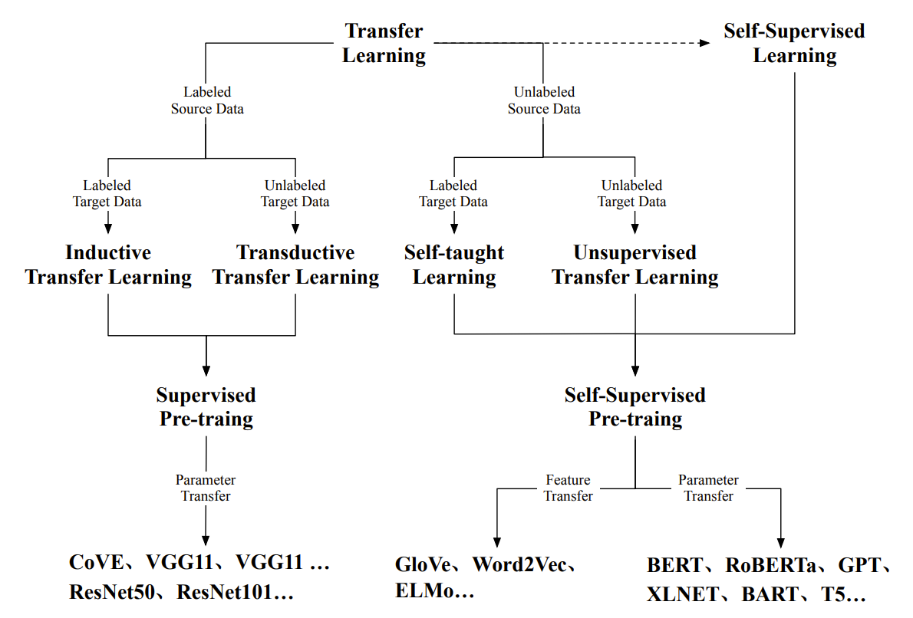
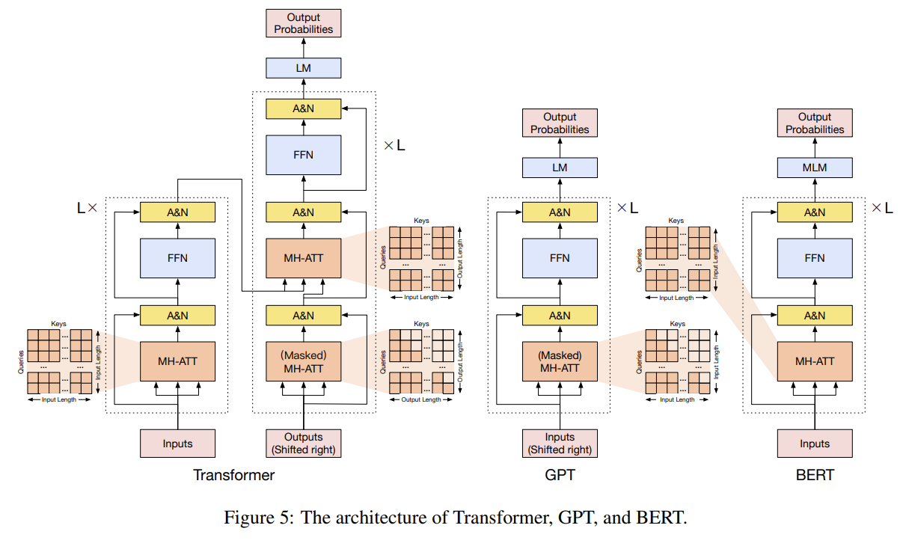
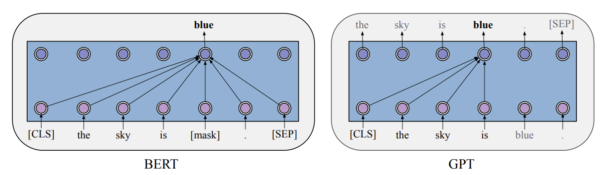
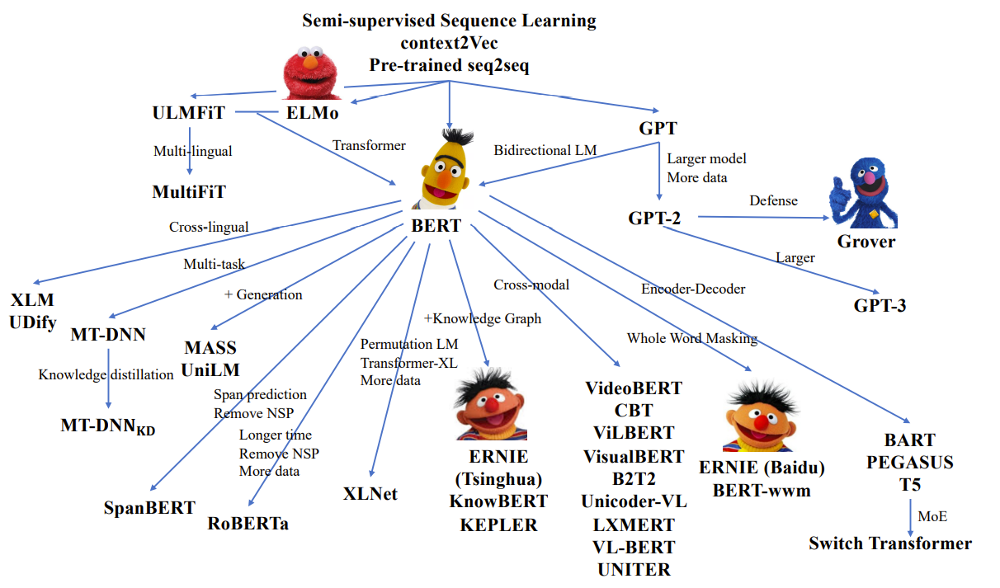
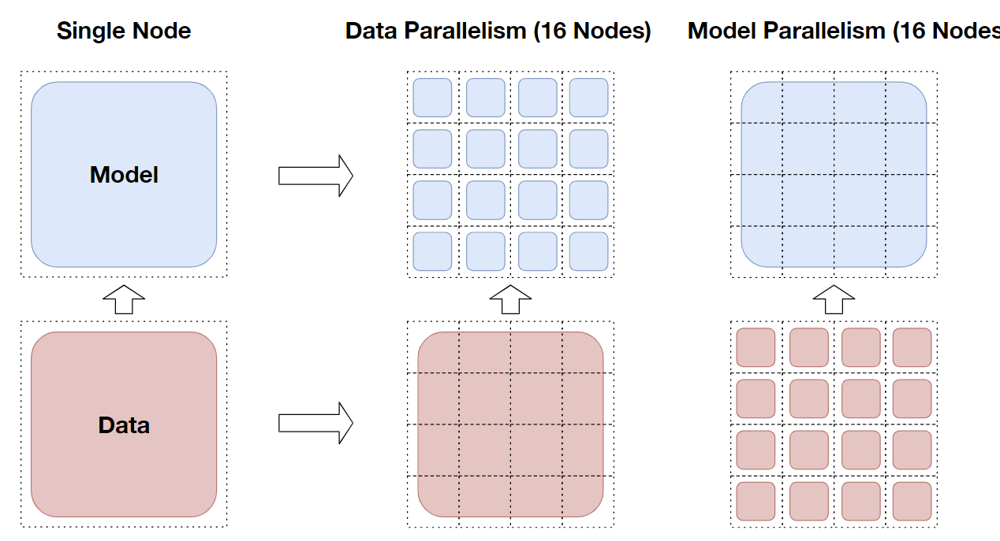

预训练模型综述
简介
《Pre-Trained Models: Past, Present and Future》是由来自清华、人大、复旦等高校的多位学者合作完成的预训练模型（Pre-Trained Models, PTM）综述。顾名思义，该文主要在讨论预训练模型的过去、现状和未来。
深度神经网络（CNN、RNN 等）通过自动化学习特征，解决了传统机器学习面临的复杂特征工程问题。但是由于特征学习过程缺少人为干预，只通过数据学习，严重依赖于有监督数据的质量和数量。而高昂的人工标注费用使得这一问题更为严峻。
迁移学习的思想缓解了这一问题。借鉴于人类可以利用已学到的知识解决新的问题，迁移学习旨在通过预训练 - 微调两阶段的方法，在预训练阶段大规模数据上学习后，只需较少的样本即可在下游任务上微调并取得较好效果。这降低了模型训练和试错的开销。广泛应用于计算机视觉的各项任务：图像分类、目标检测等。
这一想法也被应用于自然语言处理领域。在 GPT 之前，这一思想代表为 Word2Vec、Glove 为代表的静态词向量。通过在连续词袋等任务上的预训练，模型能够学习到有意义的词向量（平移不变性），进而可以应用于各类任务中。然而，受限于静态词向量的表征能力，面临一词多义问题时，这些词向量往往不能表现出很好的效果。虽然也有一些工作试图将每个词的不同含义在空间中区分开，但并没有根本性地解决这个问题。
在 Transformer 提出后的次年，基于该架构的 GPT 和 BERT 预训练模型问世。它们证实了，当预训练模型的规模变得更大，具有数亿个参数时，预训练模型可以捕获多义消歧、词汇和句法结构，在下游任务上表现出出色的性能，取得甚至比人类更优的结果。随着更大算力的投入，近些年来，预训练模型的规模呈几何翻倍式增长。GPT-3 具有数千亿参数，表现出了类似人类的少样本学习能力，如下图所示。

但是，预训练模型的理论尚不成熟，大规模参数的本质难以理解，巨大的计算成本也让人望而却步。预训练模型已经将研究人员推在一个选择的十字路口中，本文就是在这样的背景下，总结预训练模型取得的成果，并讨论其发展和未来。
背景
迁移学习
迁移学习的概念可以追溯到 1998 年，迁移学习旨在从多个源任务中获取重要的知识，然后将这些知识应用于目标任务。源任务和目标任务的数据格式、任务目标可能不同，但解决任务所需的知识是一致的。因此，NLP 里出现很多不同的预训练方法，本质上是希望能从多个维度去学习无监督语料中的知识。当预训练任务和下游任务关系密切时，模型更有可能取得好效果。
迁移学习包含两种方法：特征迁移和参数迁移。特征迁移方法预训练有效的特征表示以预编码跨领域和任务的知识。通过将这些预训练的表示注入目标任务，可以显着提高目标任务的模型性能。典型的代表就是 NLP 中的静态词向量 Word2Vec。参数迁移方法遵循一个直观的假设，即源任务和目标任务可以共享模型参数或超参数的先验分布。因此，这些方法将知识预编码为共享模型参数。然后将知识通过精细转换使用目标任务的数据调整预训练参数。参数迁移常见于 CNN。ELMO 和 BERT 分别是特征迁移和参数迁移的两种代表。
在迁移学习思想指导下、高质量数据集 ImageNet 的驱动下（覆盖数千个类别的百万张图片）、正则化方法（残差连接）的加持下，在 CV 领域诞生了 ResNet 这样的预训练模型，可用于图像分类、目标检测、图像分割等多项任务。NLP 领域也进行了尝试，典型代表是 CoVE，在 LSTM 上预训练机器翻译任务后，其编码器可以用于下游任务。
自监督学习
监督学习、无监督学习、子监督学习的关系如下图所示。

自监督学习利用输入数据本身作为监督，从大规模未标记数据中提取知识，这与无监督学习类似。区别在于无监督学习主要侧重于检测数据模式，通过聚类、异常检测等方法，而自监督学习是通过无监督数据构造出了有监督的数据，使用有监督的方法进行训练。近些年来，NLP 里的预训练任务都是自监督学习。在 BERT 的启发下，研究者们设计出了各类的预训练任务。预训练模型成功的关键就是自监督学习和 Transformer。
Transformer
在 Transformer 之前，RNN 一直是处理序列任务的标准方法。RNN 顺序读取 token 并更新状态，这使得它可以处理任意长度的序列，但也限制了它的并行能力。Transformer 结构如下图所示。

Transformer 是一种基于 Seq2Seq 的架构，由编码器和解码器组成。编码器和解码器都由几个相同的模块堆叠而成。每个模块都包含多头注意力机制、残差连接和层标准化。详细的介绍可以看我的这篇博客 Transformer | 一隅 。正则化方法使得训练更深的网络成为可能。Transformer 使用的 Attention 包含以下三种：
- 自注意力。用于编码阶段的多头注意力机制，将输入序列中的每个单词和其他单词计算注意力分数，进而得到该单词的向量表征。这也是 Word2Vec 的思想。
- 掩码自注意力。用于解码阶段生成阶段。Transformer 解码器还是按照自回归的方式进行解码，因此计算注意力的时候需要注意不能泄露数据，只能计算每个单词左侧的注意力，右侧掩码。
- 交叉注意力。用于解码阶段。Query 为前一个解码器模块的输出，Key 和 Value 为编码网络的输出。类似 Seq2Seq 中的注意力。
由于强大的特征抽取能力，Transformer 逐渐成为 NLP 中的标准。GPT、BERT 等 PTM 由此诞生。
GPT&BERT
GPT 使用 Transformer 的解码器来训练语言模型。BERT 使用 Transformer 的编码器训练掩码语言模型，二者的区别如下图所示。GPT 只有掩码自注意力机制，使用自回归的方法建模语言模型，通过极大似然的方法训练，主要用于自然语言生成（NLG）任务。BERT 中只有自注意力机制，使用双向的注意力机制建模掩码语言模型和下句预测任务，主要用于自然语言理解任务（NLU）。掩码语言模型参考了 “完形填空” 的思路，即从句子中随机挡住一个符号（标记为 [MASK]），由模型来根据其他部分预测这个符号，即可认为是这个单词的表示。

GPT&BERT 之后
在 GPT 和 BERT 之后，研究者们提出了一些改进工作，例如 RoBERTa 和 ALBERT。
RoBERTa 是 BERT 的成功变体之一，主要有四个简单有效的变化：（1）去除 NSP 任务； (2) 更多的训练步骤，更大的 batch size 和更多的数据； (3) 更长的训练期限； (4) 动态改变 [MASK] 模式。这些改进使得 RoBERTa 在一些任务上取得优于 BERT 的效果。
ALBERT 是 BERT 的另一个重要变体，它致力于减少 BERT 的参数。首先，它将输入的词嵌入矩阵分解为两个较小的矩阵。其次，它强制所有 Transformer 层之间的参数共享以显着减少参数。第三，它提出了句子顺序预测（SOP）任务来替代 BERT 的 NSP 任务。作为对其空间效率的牺牲，ALBERT 的微调和推理速度较慢。如图 9 所示，除了 RoBERTa 和 ALBERT，近年来还提出了各种 PTM，以更好地从未标记的数据中捕获知识。一些工作改进了模型架构并探索了新的预训练任务，例如 XLNet、UniLM，MASS 等。此外，整合丰富的数据源也是一个重要的方向，例如利用多语言语料库、知识图谱和图像。还有一些工作致力于则增大模型规模，例如 GPT-3。
参考下面这张预训练模型全家福。

架构设计
通常，所有用于语言预训练的 BERT 之后的 Transformer 架构都可以根据两个动机进行分类：统一序列建模和认知启发式架构。
统一序列建模
NLP 具有挑战性的原因之一，就是因为它有很多下游任务，通常可以分为三类：
- 自然语言理解（NLU）：单词 / 段落 / 句子分类、语法 / 句法分析、知识推理等
- 开放域自然语言生成：对话生成、文本生成、故事生成等
- 非开放域自然语言生成：机器翻译、摘要等
这些任务虽然多样，但所需的能力却是通用的，无外乎语言理解和语言生成能力。正如费曼所说，我不能创造的，我也不理解（What I cannot create, I do not understand）。语言理解任务可以转化为生成任务。因此 GPT 此类生成模型也可用于理解任务，甚至一些研究表明，与 BERT 相比，GPT 在理解基准方面可以达到相似甚至更好的性能（Liu 等人，2021b）。因此研究者们开始寻求一种统一的方式，建模所有的任务。
结合自回归和自编码
XLNet 首先将 GPT 式的单向生成和 BERT 式的双向理解统一起来，结合自回归和自编码的思想 ，提出了置换语言模型的预训练任务。XLNet 通过在预训练中排列 token 的顺序，然后应用自回归预测范式来解决这个问题，这赋予了 XLNet 理解和生成的能力。UniLM 提出联合训练不同的语言建模目标，包括单向、双向和 seq2seq 目标。这可以通过更改 Transformers 中的注意力掩码来实现。 UniLM 在生成式问答和抽象摘要方面表现出色。
最近，GLM (Du et al., 2021) 提出了一种更优雅的方法来结合自回归和自编码。给定一个可变长度的掩码跨度，而不是像 BERT 一样，一个 token 对应一个 [MASK] 标记。GLM 会自回归地生成 [MASK] 对应的 token。GLM 是第一个在包括自然语言理解、条件生成和无条件生成在内的所有类型任务上同时实现最佳性能的模型。
应用广义的编码 - 解码器
在 GLM 之前，无论是编码器架构的模型（例如 BERT）还是解码器架构的模型（例如 GPT），都无法解决在句子的多个空白处添加任意个符号的问题。BERT 只能将 MASK 替换为一个单词，而 GPT 只能在句子末尾添加任意个单词。因此，很自然的想法是转向类似机器翻译 Transformer 的 encoder-decoder 架构。
这一类型的先驱是 MASS（Song et al., 2019），它将掩码预测策略引入到编码器 - 解码器结构中。然而，MASS 并没有涉及填充可变长度空白的问题。 T5 (Raffel et al., 2020) 通过仅用一个掩码标记掩码文本中可变长度的跨度来解决该问题，并要求解码器恢复整个掩码序列。BART (Lewis et al., 2020a) 引入了一个有趣的想法，即通过截断、删除、替换、改组和掩码等多种操作来破坏源序列，而不仅仅是掩码。然而，encoder-decoder 架构的预训练模型存在以下问题：
- 参数更多、参数效率低下
- 在 NLU 方面表现不佳
认知启发式架构
虽然 Transformer 很强大，但与人类的认知系统还是有较大差距。注意力机制借鉴自人类的感知功能，然而人类还具有决策、逻辑推断、工作记忆等功能。
可维护的工作记忆
Transformer 的一个问题在于固定的序列长度和 \(O(n^2)\) 的复杂度，即每个 token 都要与其他 token 计算注意力。这严重阻碍了它在长文档理解中的生成和应用。然而，人类也不具备很好的长程注意力机制。认知科学家们发现人类可以保持一种工作记忆，这种记忆不仅可以组织和记忆，还可以忘却。传统的 LSTM 正是这种思想的实践。
基于 Transformer 的架构中，Transformer-XL 是第一个引入段级递归和相对位置编码来实现这一目标的。它将源序列分割为若干个段，上一个段的状态会被缓存下来，在当前片段计算注意力时使用（但不更新梯度），然后缓存新的状态，重复此过程，也就是段级递归名称的来源。这个过程隐含着工作记忆的思想。CogQA 提出在多跳阅读中保持认知图。它通过 PTM（BERT）和 GNN 两个系统建模认知图。先通过 BERT 提取相关实体，再通过 GNN 构造认知图谱，进行推理和计算。CogQA 的一个局限是 PTM 仍使用了固定的窗口大小。CogLTX 将长文本切分为若干个 block，利用记忆回想模块给 block 打分，选择相关性更高的 block 进行使用。
可持续的长期记忆
GPT-3 的成功揭示了 Transformer 具有记忆功能。在此之前， Lample et al. (2019) 等人发现，将 Transformer 的前馈神经网络替换为大型键值记忆网络，仍可以工作的很好。这在某种程度上表明 Transformer 中的前馈神经网络等价于记忆网络。然而，其记忆内存容量非常有限。REALM (Guu et al.,2020) 探索了如何为 Transformer 构建外部存储的先驱。它通过将整个维基百科的文本向量化，使用掩码语言模型预训练知识检索器。在开放域问答上取得了 SOTA 效果。
除了张量文本语料库外，(Vergaet al., 2020; Févry et al., 2020) 提出将知识库中的实体和关系向量化，并将上下文中 token embedding 替换为对应的 entity embedding。(Dhingra et al., 2020; Sun et al., 2021) 从零开始维护一个虚拟知识，并提出了一个可微分的训练目标。所有这些方法在很多开放域问答基准上取得了一些改进。
其他变种
此外，还有一些工作致力于修改 BERT 的结构 / 预训练目标，达到更好的 NLU 能力。Span-BERT 证实了使用跨边界目标 (SBO) 掩盖连续随机长度的 token 可以提高 BERT 的性能。ELECTRA 将掩码语言模型替换为替换符号检测任务，生成器会替换原始序列中的 token，而判别器检测 token 是否被替换。
使用多源数据
一些预训练模型使用多源异构数据，例如多模态、多语言的 PTM、知识增强的 PTM。
多语言预训练
在单语言语料库（如英语）上预训练的模型在许多基准测试中取得了巨大成功。但是我们生活的世界是多语言的，为每种语言都训练和维护一个单独的模型并不是一个合理的方案，尤其是涉及到机器翻译的场景。事实上，虽然人们使用的语言不尽相同，但是他们可以表达相同的意思。这表明语义是独立于语言的。一些研究人员发现，使用多语言训练模型，效果要优于几种单语言模型。因此，相较于训练很多个单语言模型，训练多语言模型可能是个更好的方法。
在 BERT 之前，已经有研究者探索多语言表征，主要有两种方法。第一种是参数共享，例如使用多种语言对训练多语言 LSTM，实现多语言翻译。另一种是学习与语言无关的约束，例如使用 WGAN 框架将语言表示解耦为与语言无关的表示。这两种方式都能应用于多语言场景，但仅限特定的任务。换而言之，上述两种方法都是用同一个特定的任务训练的，不能推广到其他任务。
BERT 的出现表明，使用自监督的方法进行预训练，对特定任务进行微调的方法是可行的。这促使研究人员设计任务预训练通用的多语言模型。多语言任务同样可以分为 NLU 和 NLG 两类。
一些 NLU 任务首先在非并行多语言语料上训练多语言的 PTM。例如，Devlin 等人提出的多语言的 BERT（mBERT），使用维基百科上 104 种语言的非并行语料库建模多语言掩码语言模型（MMLM）任务。（吐槽，维基百科不同语言的内容还是有较大差别的）。研究表明，mBERT 具有在零样本场景中泛化跨语言知识的能力。这表明即使使用相同的 BERT 结构，使用多语言数据也可以使模型学习跨语言表示。XLM-R 构建了一个名为 CC-100 的非并行多语言数据集，规模远大于 mBERT 使用的维基百科语料，尤其是对于那些语料相对匮乏的语言。XLM-R 在 CC-100 上进行预训练，在多项基准测试中获得优于 mBERT 的性能，这表明更大规模的多语言语料库可以带来更好的性能。
然而，多语言掩码语言模型无法很好的利用并行语料。而并行语料对于一些 NLP 任务，例如机器翻译来说是至关重要的。并且直觉来说，并行语料能够让模型更快更好地学习到意义相同的跨语言表征。从这一点出发，XLM 使用双语句子执行翻译语言模型（TLM）的任务。具体做法是将双语语料拼接成一个句子，在两个部分中分别随机掩码。与 MLM 相比，TLM 需要模型从不同语料中获取和对齐语义信息，并进行预测。
除了 TLM，还有一些其他的方法从并行语料中学习跨语言表征。Unicoder 提供了两个基于平行语料的新预训练任务：跨语言单词恢复（CLWR）和跨语言释义分类（CLPC）。CLWR 使用目标语言 embedding 和注意力机制恢复源语言 embedding，类似机器翻译。CLPC 将对齐的语料拼接作为正样本，未对齐的作为负样本，进行句子级别的分类。ALM (Yang et al., 2020) 自动从并行句子生成代码转换序列并对其执行 MLM，这迫使模型仅基于其他语言的上下文进行预测。InfoXLM (Chi et al., 2020b) 从信息论的角度分析了 MMLM 和 TLM，鼓励模型在对比学习的框架下区分对齐的句子对和未对齐的负例。HICTL (Wei et al., 2021) 扩展了使用对比学习来学习句子级和单词级跨语言表示的想法。 ERNIE-M (Ouyang et al., 2020) 提出了反向翻译掩码语言建模（BTMLM），并通过反向翻译机制扩大了并行语料库的规模。反向翻译是一种数据增强的方法，例如将语言 X 翻译为语言 Y 的任务，可以将语言 Y 翻译回语言 X‘，然后比较 X 与 X’是否相同，若不同的话可以将 X' 也加入数据集。 这些工作表明，利用平行语料库可以为学习跨语言表示带来很大帮助。
多模态预训练
人类所面临的世界是多模态的，包含视觉、听觉、语言等多种模态。模态指的是事情是如何发生和经历的。近年来，研究者们对多模态研究热情高涨，这些跨模态的工作大部分都归类于视觉和语言（V&L）的交叉，例如视频和文本、图像和文本的交叉。V&L 预训练的工作主要集中在改进模型架构、利用更多数据以及设计更好的预训练任务上。
对于基于图像文本的 PTM，目前大多数工作都是基于视觉语言 BERT 的架构。主要挑战在于统一语义空间中视觉和文本内容的对齐（即 V&L 基础）。为此，主要有两种模型架构设计：双流和单流。双流模型，例如 ViLBERT，使用两个独立的流处理图像和文本，并将它们通过 Transformer 注意力模块融合。单流模型，例如 Visu-alBERT，图像区域特征和词嵌入通常被拼接送入单个 Transformer 中。考虑到简单性和效率，目前工作主要使用单流模型。
在预训练任务的选择上，V&L 的理解任务广泛使用 MLM、句子 - 图像对齐（SIA）、遮挡区域分类（MRC），遮挡区域特征回归（MRFR）和直接合并下游任务。其中，MLM 旨在借助视觉和文本上下文恢复字幕中的掩码标记。 SIA 旨在判断图像 - 文本对是否匹配。 MRC 可以被认为是视觉 MLM，需要 V&L 模型来预测被掩蔽对象的类别。MRFR 进一步需要 V&L 模型来恢复被掩蔽对象区域的视觉特征。 也有模型在预训练阶段直接进行下游 V&L 理解任务。
上述提到的预训练任务专用于 V&L 理解或者字幕生成，不能用于图像生成任务。最近提出的 DALLE 是第一个基于 Transformer 的文本到图像的 PTM，可用于条件图像生成，它显示了多模态 PTM 在联系文本描述和图像生成之间的潜力，尤其是组合不同对象的出色能力。
除了图像 - 文本 PTM，还有其他形式的 PTM，例如视频和音频。 VideoBERT (Sun et al., 2019a) 对 Cooking312K 视频数据集 (Sun et al.,2019a) 进行预训练，并在零镜头动作分类任务和视频字幕任务上验证模型。SpeechBERT (Chuang et al., 2019）首先将连续音频信号编码成几个语音语义词嵌入，然后使用 MLMon 文本和音频模态作为预训练任务。 预训练后，使用口语问答（SQA）任务进行评估。
知识增强预训练
PTM 可以从大量数据中获取统计信息，而外部知识是统计建模的优秀先验。外部知识可以分为结构化知识（如知识图谱）和非结构化知识（维基百科文本）。一些工作试图通过整合实体和关系嵌入来增强 PTM，或者是它们与文本的对齐方式。Wang 等人（2021b）基于维基数据实体的描述预训练模型，通过将语言模型损失和知识嵌入损失结合在一起以获得知识增强表示。
提高计算效率
PTM 的趋势是模型越来越大，因此提升计算效率以满足日益增加的内存与计算需求非常关键，可以分为以下三种方法。
系统级优化
通常与具体模型无关，可以分为单设备优化和多设备优化。
单设备优化，一个典型的例子是浮点数精度优化。现代深度学习系统主要基于单精度浮点数（FP32），然而权重往往落在一个有限的区间里， 可以考虑使用半精度格式（FP16）完成大部分计算，而几乎没有精度损失。但是在某些情况下，也可能会出现浮点截断和溢出，为解决这个问题，研究者们提出了混合精度训练，它在 FP32 中保留一些临界权重以避免浮点溢出，并使用动态损失缩放操作来摆脱浮点截断。充分的实验表明，混合精度训练方法比 FP16 中直接训练模型更稳定。尽管混合精度训练方法可以显着减少训练时间和内存使用量，但它们仍然面临一些挑战。当模型参数没有很好地初始化时，混合精度方法仍然可能导致训练不稳定。这些挑战仍有待进一步探索。此外，还可以通过舍弃 Transformer 中的部分隐藏状态、利用 CPU 存储模型参数再通过精细的策略完成 CPU 和 GPU 内存交换，来降低模型内存开销。
多设备优化。预训练模型往往使用分布式的方法进行训练，使用多个节点中的多个 GPU 来加速计算，并行方法可以分为数据并行、模型并行。
数据并行是一种简单有效的加速模型的方法，如下图所示。使用数据并行时，大 Batch 数据被划分到不同的节点，可以并行化前向传播。 在反向传播时，不同节点上的梯度应该通过 all-reduce 操作进行聚合，以保证参数优化的一致性，这可能会引入额外的通信开销。容易看出，这相当于每个 GPU 上都保存了一份模型参数。
当单个模型的参数达到十亿或更多时，模型参数无法容纳在同一个 GPU 上（即使是半精度或者混合精度训练），这使得数据并行无法进行。模型并行则可以解决这个问题，通过将矩阵运算分块，分布在不同的 GPU 上，再通过节点间的通信操作保证前向 / 反向传播的正确性。但是，模型并行需要在前向 / 反向传播过程中插入通信操作，无法与计算重叠。对比之下数据并行的 all-reduce 操作通常可以被反向计算重叠。因此，数据并行是首选，只要它可以克服内存容量的过度需求。
下面这张图和模型并行和数据并行的示例。

模型并行还存在另一种流水线并行的方法。将模型划分为很多层，不同层分布在不同的节点，前一层的输出作为后一层的输入。流水线并行只需要在执行管道相邻阶段的节点之间传递中间激活状态，通信成本较小。但是，流水线并行以一个 batch 的前向和反向传播为完整周期，会有流水线气泡产生。
高效预训练
除了一些系统级的优化方法外，研究人员还致力于探索更有效的预训练方法，以便能够以较低成本的解决方案对大规模 PTM 进行预训练。
高效的训练方法。传统的预训练任务可能样本效率低下。以 MLM 为例，需要模型根据上下文来预测掩码标记。掩码标记通常是输入标记的子集（通常为 15%），即模型只能从一小组输入标记中学习。为了解决这个问题，ELECTRA (Clarket al., 2020) 提出了替换令牌检测任务。此任务强制模型区分输入标记是否被生成器替换。此任务可以利用来自每个样本的更多监督信息，因为需要区分所有输入标记。实验证明，ELECTRA 仅需少得多的预训练步骤，就可以达到与 MLM 相似的性能。另外，传统 MLM 随机掩盖文档中的标记以进行预测。由于预测不同标记的难度差异很大，随机掩码策略使训练过程变得漫无目的且效率低下。一些工作根据 token 的重要性或者梯度，加速模型训练。
除了预训练任务外，当前的预训练动态也是次优的。最近的大规模 PTM 都要求大的 batch size，因为研究指出这有利于模型收敛。但在一项早期工作中（Goyal 等人，2017 年），研究人员发现简单地增加 batch size 可能会导致优化困难。因此，他们提出了一种预热策略（即 warm up），在训练开始时线性增加学习率。这种策略通常用于最近的大规模 PTM。此外，研究者发现在 Transformer 不同层间自适应地使用不同的学习率也可以在 batch size 较大时加快收敛速度。
高效的模型架构。除了高效的预训练方法，更多的模型架构变体也可以降低计算复杂度，提高训练效率。正如之前提到的，基于 Transformer 的 PTM 面临长输入序列时会存在 \(O(n^2)\) 序列长度复杂度的问题。一些工作致力于降低 Transformer 的复杂度。
模型压缩
另一个提高 PTM 效率的重要方法是模型压缩。通过将大型模型压缩为小型模型，以满足资源受限设备上更快推理和部署的需求。
参数共享。PTM 可以通过在相似单元之间共享参数进行压缩。AL-BERT (Lan et al., 2019) 使用分解嵌入参数和跨层参数共享来减少 PTM 的参数，在所有 Transformer 层上使用相同的权重。ALBERT 在 BERT 模型的基础上实现了显着的参数减少，同时具有相同甚至更好的性能。这表明 PTM 可能极度过度参数化。
模型剪枝。为了更好地利用当前 PTM 的过度参数化特性，另一种减少模型参数的方法是模型剪枝，它在 PTM 中剪掉一些无用的部分，以在保持性能的同时实现加速。研究人员研究了 Transformers 中注意力头的冗余，发现只有一小部分就足以获得良好的性能。这些头中的大部分都可以移除，而对准确性的影响很小。
知识蒸馏。虽然 ALBERT 减少了 PTM 的大小，但并没有减少推理时间，因为模型计算复杂度并没有减小。知识蒸馏旨在训练一个小模型以复现大模型的行为。有一些典型的工作将知识蒸馏用于 PTM，例如 DistillBERT (Sanhet al., 2019)、TinyBERT (Jiao et al., 2019)、BERT-PKD (Sun et al., 2019b) 和 MiniLM (Wang et al., .,2020d)。 但是，知识蒸馏方法需要用于预训练教师模型的数据，考虑到数据版权和隐私，这些数据通常不会发布。而且，教师模型需要对整个预训练数据进行转发，以产生对数或中间表示进行知识蒸馏，导致训练时间更长。
模型量化。模型量化是指将高精度浮点参数压缩为低精度浮点参数。 模型量化这个词听上去不是很好理解，更像是一种参数压缩方法。 传统的 PTM 通常用 32 位或 16 位浮点数表示参数，而量化后的模型可以用 8 位甚至 1 或 2 位表示。一种量化方法可以使用 k-means 对参数进行聚类，让相近的值落在同一个聚类中心，进而复用同一个值。对于最近的基于 Transformer 的模型，8 位量化已在 Q8BERT 中被证明是有效的，对模型性能的影响很小。为了减轻性能下降，也可以采用其他保持精度的方法。 Q-BERT (Shen et al.,2020a) 使用混合比特量化，其中 Hessian 谱较高的参数需要更高的精度，而 Hessian 谱较低的参数需要较低的精度。
可解释性 & 理论
鉴于 PTM 在多项任务上取得的卓越性能，研究者试图解释 PTM 的行为，包括其如何工作和捕获到了怎样的模式。这些工作涵盖了 PTM 的几个重要属性：知识、鲁棒性和结构稀疏性 / 模块化。 此外，在构建 PTM 的理论分析方面也有一些开创性的工作。
知识
PTM 捕获的隐性知识大致可以分为两大类：语言知识和世界知识。
语言知识包含了句子的语法、语义、词义等信息。与传统的神经模型如 CNN 和 RNN 相比，大规模 PTM 可以从海量的预训练数据中学习到丰富的语言知识。为了研究 PTM 的语言知识，研究人员设计了几种方法：表征分类（利用隐藏状态对句子 / 单词进行分类）、表征分析（利用隐藏状态计算统计信息，例如相似度、距离）、注意力分析（利用注意力矩阵，发现文本的层次结构）、生成分析（语言模型计算概率）。
世界知识主要包括常识知识和事实知识。Davison 等人提出将关系三元组转化为掩码句子，根据 PTM 给出的互信息对句子进行排序，证明在其表示空间中学习了各种常识特征。Petroni 等人（2019）提出将关系知识生成表述为填空语句的完成。根据实验结果，他们发现在没有任何微调的情况下，PTM 在这项任务上明显优于以前的监督基线，证实 PTM 学习到了事实知识。但是，这些填空语句的构造并非易事。
鲁棒性
近期工作通过使用对抗性样本证明 PTM 存在严重的鲁棒性问题。对抗性攻击旨在通过对原始输入的小扰动来生成被模型错误分类的新样本。 例如，PTM 很容易被同义词替换所愚弄。事实上，这个问题在 word2vec 时代就存在了。由于同义词、反义词所在上下文相似，它们的表征也近似。同时，不相关的格式词也会误导 PTM 做出错误的预测。但是高质量对抗样本的获取也面临挑战，目前的工作主要利用模型的预测概率和模型梯度来搜索对抗性样本。最近，人在回路（Human-in-the-loop）方法（Wallace 等人，2019b；Nie 等人，2020）已被应用于生成更自然、有效和多样化的对抗样本，这带来了更大的挑战和经验。总而言之，当人们为实际应用部署 PTM 时，PTM 的鲁棒性已成为严重的安全威胁。
结构稀疏性
正如前文提到的，Transformer 具有过度参数化的问题。研究人员表明，多头注意力结构在机器翻译 (Michel et al., 2019)、抽象摘要 (Baan et al., 2019) 和语言理解 (Kovaleva et al., 2019) 的任务中是多余的，即当去除部分注意力头，可以获得更好的性能。这种现象与 (Clark et al., 2019) 中的观察结果一致，他们发现同一层中的大多数头部具有相似的自我注意模式。他们的研究结果表明，不同头部的注意力行为可以归类为一组有限的模式。除了多头注意力之外，其他几项工作也在探索识别参数的稀疏性。 Gordon 等人 (2020) 表明，低水平的剪枝 (30-40%) 根本不会影响预训练损失或下游任务的性能。
PTM 理论
由于预训练在深度学习方面取得了巨大成功，研究人员试图研究预训练的工作原理，尤其是无监督预训练。在深度学习的早期，人们发现通过贪婪的逐层无监督预训练和监督微调来训练深度贝叶斯网络是有效的（Hin-ton et al., 2006）。最近，基于包括语言建模在内的对比学习的预训练已经成为主流方法。
Erhan et al. (2010) 提出了两个假设来解释预训练的效果：（1）更好的优化和（2）更好的正则化。在更好的优化方面，与随机初始化的模型相比，预训练的网络更接近全局最小值。在更好的正则化方面，PTM 的训练误差不一定比随机模型好，而 PTM 的测试误差更好，这意味着更好的泛化能力。
对于预训练目标的最新发展。Saunshi, et al（2019）对对比无监督表示学习进行了理论分析。对比学习将出现在相同上下文中的文本 / 图像对视为语义相似对，将随机采样的对视为语义不相似对。然后，相似对之间的距离应该很近，不同点之间的距离应该很远。在语言建模的预测过程中，上下文和目标词是相似对，其他词是负样本（Kong et al., 2020）。Saunshi 等人（2019）首先提供了一个新的概念框架来弥合预训练和微调之间的差距。具体来说，他们引入了潜在类的概念，语义相似的对来自同一个潜在类。例如，潜在类可以是 “快乐” 以包括所有文本，包括快乐的情绪。潜在类涵盖所有可能的类，下游任务定义的类来自潜在类集合。然后，他们证明了对比学习的损失是下游损失的上限。因此，在优化预训练损失时，我们可以预期下游任务的损失会更低。
未来发展方向
架构和预训练方法
值得探索的问题有：
- 新架构。Transformer 饱受诟病的计算复杂度，需要更有效的模型捕获更长范围的依赖信息。另外，也需要根据下游任务设计特定架构，例如 NLU 使用 Transformer Encoder，NLG 使用 Transformer Decoder。
- 新的预训练任务。如何设计有效、高效的自监督任务，类似 ELECTRA。
- 不止微调。微调是将 PTM 的知识转移到下游任务的主要方法，但一个缺点是其参数效率低下：每个下游任务都有自己的微调参数。NLU 最近盛行的 Prompt 就是对微调的改进。
- 可靠性。提高 PTM 的鲁棒性，免受对抗攻击。
多语言、多模态预训练
- 更多的模态。除了图像和文本，还可以利用视频和音频进行多模态预训练。主要挑战在于如何对这两种模态中涉及的时间上下文进行建模。
- 更深刻的解释。将视觉和语言联系起来的原因仍然没有定论，只是一些经验性的感觉，没有脑科学或者深度学习理论的支撑。另外，多模态训练是否会对单模态造成损失，如何克服？这些都是悬而未决的问题。
- 更多的下游任务。虽然多模态预训练可以应用于图文检索、图文生成、图文生成等下游任务。 然而，为多模态预训练找到一个 “真正的” 真实世界应用场景仍然具有挑战性。
- 迁移学习。多语言模型应当灵活适配新的语言。另外，目前的多模态多语言模型无法处理音频数据，不同语言的音频需要转换为文本再翻译。
计算复杂度
大规模深度学习模型的新需求给现有的深度学习框架带来了严峻的挑战。为了开发更有效的框架，可以探索以下方向：
- 数据转移。设计精细的、定义良好的数据调度和计算策略，最小化通信成本、最大化计算和内存资源以及优化计算 - 通信重叠。
- 并行策略。从数据并行、模型并行、流水线并行以及各种混合并行方法可以根据神经网络的结构和硬件配置找到它们的最佳使用方式。在当前实践中，用户必须全面考虑给定深度学习模型的网络结构和设备间通信带宽，以决定最合适的并行策略或在不同策略之间切换（Shazeer 等，2018）。
- 大规模预训练。鉴于现有深度学习框架对模型并行和流水线并行的支持不佳，一些新兴的开源项目开发了用于大规模训练的专用框架。由于应用案例优先以及存在的兼容性问题，这些方法无法共同构成完整的解决方案。
- 包装器和插件。由框架提供插件或者包装器自动管理通信操作，避免用户手动编程通信的复杂过程。
理论基础
目前的 PTM 理论存在以下问题：
- 不确定性。PTM（以及其他深度神经网络）的一个未得到解决的问题是它们通常对预测过于自信，即这些模型不知道他们不知道什么。你问 GPT-3 “我的脚有几只眼睛”，GPT-3 肯定会给出 “你的脚有两只眼睛” 这样的答案，这看起来违反直觉。在机器学习中处理这种分布外（OOD）数据通常是一项具有挑战性的任务。为了应对上述挑战，一个有希望的方向是采用贝叶斯方法，探索概率工具来捕获数据和模型的不确定性（也分别称为任意不确定性和认知不确定性）。当然，提高贝叶斯深度学习的计算效率是解决上述挑战的关键因素。
- 泛化和鲁棒性。PTM 的另一个重要问题是泛化。从理论上理解预训练在提高下游任务泛化方面的作用很重要。有没有有效的方法来探索 PTM 作为额外的数据资源来提高下游任务的鲁棒性？此外，如前所述，PTM 本身的鲁棒性是一个未解决的问题。
模型边缘学习
模型边缘是指存储在模型中的知识。给定三元组 <h,r,t>，我们很容易知道头部实体 h 和尾部实体具有关系 r，但是 PTM 中的表征的意义却不明晰。越来越多的研究人员探索了 PTM 从数据中学到了哪些知识，以及为什么它们在下游任务中表现如此出色？这些模型边缘如何存储和管理？是否有可能建立一个通用连续知识库（UCKB）来存储来自各种 PTM 的模型边缘？这些都是有希望的研究方向。
认知和知识学习
让 PTM 更有知识是 PTM 未来的一个重要主题。可以将知识型 PTM 的未来发展分为以下三种方法：
- 知识增强。对于输入文本和外部知识，关键的问题是弥合文本表示和知识表示（包括符号或向量）之间的差距，并统一使用它们的信息作为输入。这个问题的解决需要统一的模型架构和知识引导的预训练目标。
- 知识支持。根据输入的先验知识，设计不同的模块处理不同类型的输入，类似人脑不同区域对应不同的活动功能，加快训练和推理进程。
- 知识监督。通过从知识库和大规模语料库中学习，与仅使用纯文本相比，PTM 可以具有更好的语言理解和生成能力。通过改进认知架构、明确推理、知识交互这三个方向，未来的 PTM 有望于能够轻松理解文字之外的含义。
应用
在具体应用中，PTM 还存在一些问题：
- 对话系统。虽然基于 Transformer 的开放域对话系统显示出优秀的与人对话的能力，但是在对话领域，缺少特定的预训练任务。
- 特定领域的 PTM。当大规模的特定领域语料库可以廉价获得时，可以在这些数据上训练特定领域的 PTM。这种领域专业知识通常被认为对于解决许多特定领域的问题很重要。
- 领域适应和任务适应。大规模 PTM 的简单微调对于特定领域的应用是不够的（Gururangan 等人，2020；Ke 等人，2020）。最根本的原因是分布变化：特定域中的数据分布可能与一般预训练文本中的数据分布有很大不同。如何弥合预训练和特定任务微调之间的差距变得至关重要。
总结
这篇综述回顾了预训练模型的发展历史、分析了其核心问题并指明了一些改进的方向。这篇论文中的一些工作我也没有接触过，像多模态、Transformer-XL 等。因此读起来也有一些一知半解。建议有余力的读者去看原文。毕竟综述类文章本身就是知识的压缩，很难在博客中再进行压缩了。这也是我为什么这篇博客完全按照原论文格式排版。。。
最后，新年快乐！